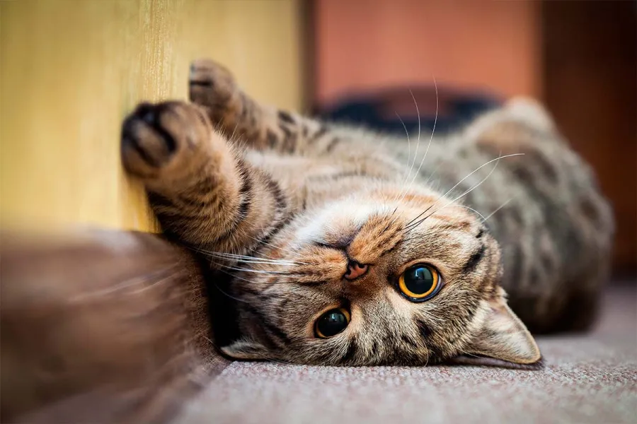

Perros
Los perros necesitan una alimentación equilibrada, agua fresca y un lugar limpio y seguro donde descansar. También necesitan realizar ejercicio, jugar y recibir cariño. Es importante llevarlos al veterinario para controlar su salud y mantener sus vacunas al día.

Gatos
Los gatos necesitan una alimentación adecuada, higiene y un espacio seguro para vivir. Aunque son animales independientes, también necesitan atención y cariño. Es importante respetar sus momentos de descanso y realizar controles veterinarios para cuidar su salud.